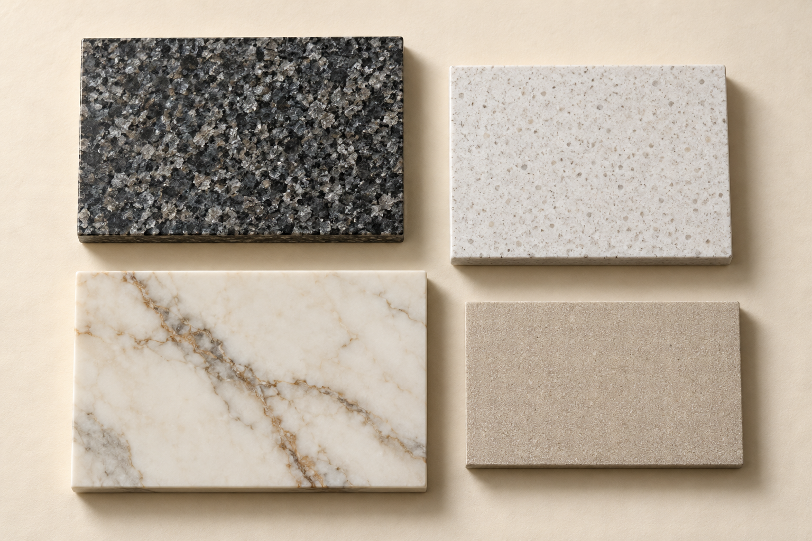

<meta charset="utf-8"><meta name="viewport" content="width=device-width,initial-scale=1"><style>body{margin:0;background:#f5f1e9;color:#28241f;font:18px/1.6 Arial,sans-serif}header{display:flex;justify-content:space-between;padding:24px 5%;border-bottom:1px solid #b5a99b}a{color:#87472f}h1,h2{font-family:Georgia,serif;font-weight:400;line-height:1.05}h1{font-size:clamp(44px,6vw,84px);max-width:950px}main{padding:40px 5%}img{width:100%;object-fit:cover}a.cta{display:inline-block;background:#87472f;color:white;padding:12px 24px;text-decoration:none}.split{display:grid;grid-template-columns:1fr 1fr;gap:40px}.hero{height:440px}.board{display:grid;grid-template-columns:1fr 1.2fr;gap:50px}p{max-width:65ch}@media(max-width:700px){.split,.board{display:block}.hero{height:240px}h1{font-size:48px}}</style><header><strong>akmenas.lt</strong><a href="#gidai">Pasirinkimo gidai</a></header><main class="board"><div><h1>Rinkitės pagal savo kasdienybę.</h1><p>Keturi paviršiai, skirtingi klausimai. Pirmiausia supraskite medžiagą.</p><a class="cta" href="#gidai">Palyginti medžiagas</a></div></main><main><section id="gidai"><h2>Trys klausimai prieš pasirinkimą</h2><p>Medžiagų palyginimas · Pasiruošimas užklausai · Kasdienė priežiūra</p></section><section id="poreikis"><h2>Pirmiausia — klausimas.</h2><p>Informacinis projektas. Užklausa nėra gamybos ar montavimo užsakymas.</p></section></main>